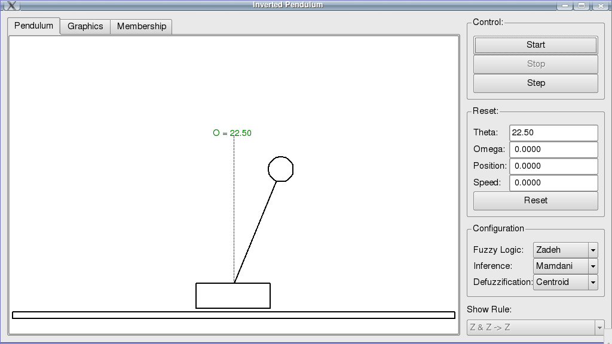

This program implements an animation of the control of an inverted pendulum using the fuzzy package. To run it, you must have the PyQt4 and the PyQwt5 libraries installed. It presents a window with a representation of a inverted pendulum out of balance, and some controls to put a fuzzy logic controller to control and balance it. The controls offered allow to choose from different types of norms (and, or and not operations), as well as different implication, aglutination and defuzzification methods. Besides animating the inverted pendulum, it is possible to graphically track the controlled variables and follow the membership functions.
Before trying to run the program, please make sure that the required libraries are installed and working. Usually, they are not difficult to install: Windows builds come with an installer, and Linux versions can be installed using a package manager.
The program resides in the demos\ip folder. If you use Windows, use the file browser to navigate to that folder and double-click the IPApp.py file, and the program should start. In Linux, you can start it by the command line interface, navigating to the program folder and typing:
# python IPApp.py
The main window of the program will be shown as in the picture below.
Occupying the biggest portion of the window there is a set of three tabs that allow to visualize what’s happening with the pendulum. When the program starts, an out-of-balance pendulum is shown, and the animation is stopped. There are three tabs with different visualizations:
- Pendulum
- This tab shows the animation of the pendulum. In addition to showing the present position of the pendulum, it also shows the values of the variables involved in the control. In green, the angular position of the pendulum is shown, relative to the vertical (indicated by a vertical dashed line). In blue, the angular velocity of the pendulum is given. In red the resulting force applied to the cart.
- Graphics
- This tab shows graphically the progression of the variables according to time. In red is shown the angular position of the pendulum; in dark blue the angular speed; in light green the position of the cart relative to the center of the window; and in dark yellow the speed of the cart.
- Membership
This tab shows the membership of the controlled and manipulated variables. The top left set of plots are the membership functions of the angular position of the pendulum. The bottom left set of plots are the membership functions of the angular speed of the pendulum. In these plots a vertical black bar shows the present value of the respective variable.
The central plots are the membership functions of the applied force (which is the result of the controller). The result of the aglutination is shown in light gray, while a given production rule can be seen in dark gray. It is possible to change the specific rule that is highlighted in this view (see Show Rule below).
With this panel it is possible to control the animation. Three buttons allow to start, stop and step over the animation, and the visualization in the active tab is updated accordingly.
- Start
- Starts the animation. When the animation is running, this button is made inactive.
- Stop
- Stops the animation if it is running. This button is normally inactive, but is made active when the animation is running.
- Step
- Performs a single step of the control: given the values of the angular position and speed, calculates the force that should be applied to the cart and updates the view. This button is made inactive when the animation is running.
This panel gives feedback of the variables in the control and allows to modify them. When the animation is running, this entire panel is made inactive, so modification is allowed only when the animation is stopped. To modify the values, just type the new value of a variable in the respective box and press the Reset button.
The configuration allows to change some parameters of the controller. It is possible to change the behaviour of the fuzzy logic, as seen below. When the animation is running, these controls are made inactive, so modification is only possible with the animation stopped.
- Fuzzy logic
- The fuzzy logic combo box allows to specify how the and, or and not operations are calculated. There are, presently, two options: the traditional Zadeh logic (using max and min operations) and the Probabilistic logic. Please, consult a good reference on fuzzy logic, or the fuzzy package documentation.
- Inference
- The inference and aglutination methods used. There are two options: the traditional Mamdani inference (using max and min) and the Probabilistic logic. Please, consult a good reference on fuzzy logic, or the fuzzy package documentation.
- Defuzzification
- The defuzzification method. There are five possibilities: the usual Centroid method, the Bissector method and the less used SOM (Smallest of Maxima), LOM (Largest of Maxima) and MOM (Mean of Maxima) methods.
This combo box allow to visualize the action of a specific rule. That selects a production rule of the controller that is plotted with dark gray color in the aglutination plot of the Membership tab.